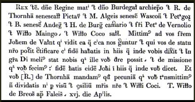

- This Site
-
The timeline above displays the itinerary of King John of England for nearly every day of his seventeen year reign. Like most medieval kings, John's government was relentlessly itinerant. The places John visited are plotted on the map, changing dynamically, reflecting the places displayed in the lower band of the timeline. The timeline can be scrolled left and right by clicking and dragging, and you can observe John's progress as he traveled throughout England, Wales, Ireland, and France. The top band displays contextual events of general interest for the period, and the highlighted bar in the middle of the band represents the period of time displayed in the lower band.
The data displayed in this timeline was published in tabular format in the Rotuli Litterarum Patentium in Turri Londinensi Asservati, edited by Thomas Duffus Hardy, and published in 1835. This essential source for students of the period is a large folio volume not widely available and rather awkward to use. Both the itinerary and the text of the patent rolls themselves are presented here in a more convenient form as a service to historians and students.
For a more detailed description of the structural elements of the timeline above, consult the information under the 'Legend' tab.
- The Patent Rolls
-
The letters patent of the English crown are a foundational source for the study of medieval English government. These letters, "patent" because they were transmitted open and intended for all to see, constitute the primary instruments of royal government in the time of King John and his successors. They are the essential starting point for any study of medieval England, and indeed medieval Europe.
Letters patent from the medieval period touch upon every conceivable aspect of royal government, from treaties and diplomatic correspondence to fiscal matters and family politics. The best introduction to the patent rolls, their content and historical utility, is Hardy's own introduction beginning on page i.
The text of the Rot. Lit. Pat can be used independently from the timeline. Clicking on the 'Page Images' will display the text with a paging mechanism allowing you to consult the indexes of names and places, and go directly to pages of the introduction or the roll itself.
- The Itinerary
-
The publication of the patent rolls alone was a boon to historians of medieval England, but Thomas Hardy went further. For the 1835 edition, Hardy collated information from the teste and dating clauses of the patent letters themselves with information drawn from the charter and close rolls, the wardrobe accounts, and the praestita rolls. Based on this collation, Hardy was able to determine the exact itinerary of the king for nearly every day of his reign. This was a remarkable feat of scholarship, and Hardy's itinerary has been an invaluable resource for historians ever since. (The pages of Hardy's original itinerary tables begin here.)
Included below Hardy's tables was a gazetteer of the places mentioned, with the dates for each place listed. The data displayed in this timeline and map was captured by scanning the gazetteer, processing the image with OCR software, and parsing the result with a python script to produce a JavaScript object for the timeline software.
Unfortunately, the Rot. Lit. Pat. exists only in the folio edition published in 1835. This is a fairly uncommon volume, available only in extensive research libraries. The purpose of this site is to offer the data of Hardy's itinerary in a more convenient and widely accessible format, and link it more closely with the patent letters themselves. Clicking on any of the events in the lower band of the timeline above will bring up an information bubble which contains links to the pages of the Rot. Lit. Pat that contain dated letters for the relevant period. Because the data in the itinerary was drawn from a variety of sources, not all of the events on the timeline will have links, and not all of the events will be represented in the patent letters at all.
- The Map
-
Place-names have always been a problem for students of medieval records. Places change their names; the same place-name is sometimes applied to more than one location; places, once important, sometimes disappear altogether and are known only by their names in the records.
The place markers on the map were derived by querying the Google geocoding interface using Hardy's place-names. This was a pretty crude first pass at providing geographical data for the timeline events. The procedure results in many errors since Google knows nothing of medieval places. The place markers on the map should therefor not be regarded as authoritative. The research and disambiguation of all the 600 or so places mentioned in Hardy's itinerary is a research project that will go forward using this first pass as a starting point.
- Record Type
-

When Hardy published the Rot. Lit. Pat. in 1835, it was thought that in order to preserve potential ambiguities present in the rolls, an effort should be made to reproduce the text including the system of scribal abbreviation in use during the thirteenth century. To that end, a typeface called "record type" was used, and an example drawn from the text is shown here. In practice, record type tends to obfuscate rather than illuminate. And for our purposes here, this specialized typeface has the added unfortunate effect of rendering the text opaque to ordinary OCR techniques. That is why the text of the rolls is not digitized and indexed as it should be. To improve the readability of the abbreviations, the aspect ratio of the page images for the body of the text has been slightly altered, elongating the images somewhat.
Record type takes some getting used to, but the Latin of the rolls is so highly formulaic that reading it is not too challenging. Fortunately, an excellent guide to the system of abbreviation is available: Martin, Charles Trice. The Record Interpreter: A Collection of Abbreviations, Latin Words and Names Used in English Historical Manuscripts and Records. London: Stevens and Sons, 1949. This work is still in print, has been through many editions, and is readily, and inexpensively available.
- Construction Zone
-
- Oct. 2017 — another remodel to present a goldmine of useful data generously provided by Janet Gillespie. In the course of her dissertation research, Gillespie has patiently and precisely investigated ALL of the sites mentioned in Hardy's Itinerary of John, assembled geographical coordinates and source material on each one, and commented on the importance of each in the context of John's itinerations.
As mentioned below, the first generation of map coordinates for this site were the result of a very crude geocoding automation. Gillespie's data are far more complete and accurate and henceforth they will constitute the 'canonical' gazetteer for this site.
I'm very much indebted to Janet for her generous contribution and ongoing collaboration in this project.
- Feb. 2009 — remodel of the site to make better use of screen real estate making use of the jQuery and Shadowbox javascript libraries
- The information bubbles attached to the events in the timeline currently contain only the short title and the full name used by Hardy in his gazetteer. Some of the bubbles also contain links that will open the pages of the Rot. Lit. Pat. for the period in question. Not all of these links have been provided yet.
- There are 642 named places in Hardy's itinerary. Currently the map here has map-markers for 457 of these. These map-markers are the result of the crudest sort of querying of the Google geocoding interface, as such, they are in NO WAY authoritative. (you may find one of these map-markers on Java, not exactly in John's ambit!) Identifying and disambiguating the historical place-names mentioned in Rot. Lit. Pat. is an ongoing research project.
- Some browsers on some platforms load and render the data faster than others. Work is under way to address cross-browser issues and optimize the code. A different approach to placing the map markers has resulted in much zippier response time. Thanks David for showing me how to make this approach work!
- The top band of the timeline contains events of general relevance for medieval European history to provide context for the events of John's itinerary. Additional events for this portion of the timeline will be added in future.
- Plans for the future also include making public an RDF model (Resource Description Framework) for the data presented here.
- Also, a detailed tutorial will be provided describing the procedure used to create this site so that similar resources may be created for other scarce and valuable resources in the public domain.
- Oct. 2017 — another remodel to present a goldmine of useful data generously provided by Janet Gillespie. In the course of her dissertation research, Gillespie has patiently and precisely investigated ALL of the sites mentioned in Hardy's Itinerary of John, assembled geographical coordinates and source material on each one, and commented on the importance of each in the context of John's itinerations.
- Contact & Contributions
-
The Itinerary of John is an ongoing, open-sourced research project. This site was created by integrating the open-source timeline API from MIT's SIMILE project with the publicly available mapping API from Google. The content of the site, similarly, is intended to be open-sourced. Plans for the future include deploying this project in the context of a wiki so that interested scholars may contribute:
- Transcriptions and translations of the letters in the Rot. Lit. Pat.,
- Disambiguation, geographical location (lat/lng), and summary histories of the place-names mentioned in the itinerary,
- Links to corroborating documents for the events in the itinerary that are not attested by letters in the patent rolls,
- Commentary and analysis of specific letters in the Rot. Lit. Pat.,
- Methods and mechanisms for semantically linking the data here with similar data in other repositories.
The Itinerary of King John project is intended to be collaborative. Comments, corrections, and questions can be addressed to me at jjcrump [at] myuw.net until such time as the wiki framework is in place.
- Acknowlegements & Rights
-
Great thanks and kudos belong to David Huynh, the principal author of the SIMILE timeline API. He has created a tool that will be a great boon to historians, and without his direct assistance, this resource would not have been possible.
Thanks also to the Suzzallo Library at the University of Washington for allowing me to scan the full text of their copy of the Rot. Lit. Pat.. Also thanks to the Suzzallo Library office of Digital Initiatives for allowing me to use their scanning equipment and software (principally ABBYY FineReader OCR software, and Photoshop) for capturing the data and preparing the page scans for display on the web.
So far as I know, the Rotuli Litterarum Patentium is in the public domain. Unless otherwise noted, all other text on this site, the RDF encoded data, and the software code that enables the site (exclusive of the SIMILE timeline and Google Maps APIs) are offered under the following license:
The Itinerary of King John Project by J. J. Crump is licensed under a Creative Commons Attribution-Noncommercial-Share Alike 3.0 United States License.